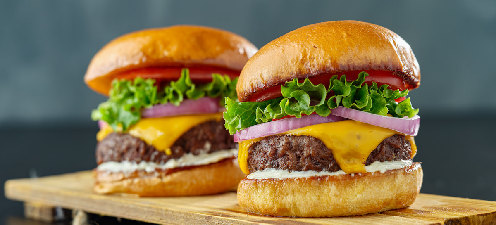

Smoked Burger

Description
A smoked burger is a ground beef patty cooked using indirect heat and smoke. Seasoning the meat with a simple blend of salt, pepper, and garlic allows the flavor of the woodsmoke to shine. Add more flavor by serving your favorite condiments, cheeses, and burger toppings alongside the smoked hamburger patties.
Ingredients
- 1⅓ pounds 80/20 ground beef
- 1 teaspoon kosher salt
- 1 teaspoon freshly ground black pepper
- 1 teaspoon granulated garlic or garlic powder
- 4 slices cheddar cheese (optional)
- 4 hamburger buns, toasted, to serve
- Burger toppings and condiments, to serve
Steps
- Preheat your smoker to 225 degrees Fahrenheit according to the manufacturer’s instructions.
- Weigh or separate the burgers by eye into four ⅓-pound portions.
- Form the portions into patties with your hands, taking care not to compact the meat with too much pressure.
- Season the patties liberally with salt, pepper, and granulated garlic.
- Place the burger patties directly onto the grates of the smoker.
- Smoke the patties until they reach the desired doneness (or until they reach 15 degrees below your desired doneness if using the reverse-sear method).
- Use a meat thermometer to track the internal temperature of the burgers. Well-done burgers will register at 160 degrees Fahrenheit, while medium-rare burgers will register at 130 degrees. (A well-done burger will take about 1 hour to cook in a 225-degree smoker.)
- To reverse-sear the burger, heat the smoker with a sear plate inside, or a gas grill, to 425 degrees Fahrenheit. Sear the exterior for a few minutes per side to finish cooking the burgers. (Alternatively, sear the burgers in a pan or skillet on the stovetop or under a broiler.)
- If making cheeseburgers, top each patty with a slice of cheese toward the end of cooking. Let the cheese melt while the burger finishes cooking, about 1–2 minutes.
- Serve the smoked burgers immediately alongside your favorite toasted buns and toppings.
- Garnish the grilled octopus with fresh herbs and flaky salt.